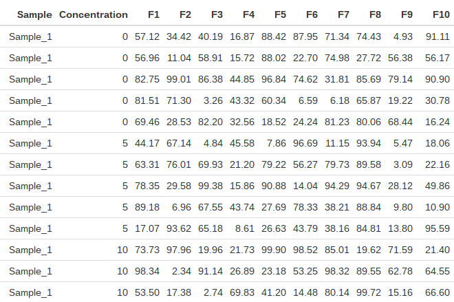

library(data.table)
library(dplyr)
library(tidyr)
library(naturalsort)
### Generate table
nF <- 50 # number of features
nS <- 20 # number of samples
nR <- 5 # number of replicates
conc <- c(0, 5, 10, 20) # concentration per sample
normalizeConc <- conc[1] # concentration for normalization
dt <- data.table(
Sample = rep(paste0('Sample_', seq(nS)), each = nR * length(conc)),
Concentration = rep(rep(conc, each = nR), times = nS)
)
for (i in seq(nF)) dt[, paste0('F', i) := runif(n = nS * nR * length(conc), min = 0, max = 100)]
df <- as.data.frame(dt)A common task when working with data is split-apply-combine – splitting a dataset up, applying a function and then recombining the results. It’s often performed in creating summary tables around a factor.
First let’s define the data to be used. I’m interested in a scenario where I have nS samples at nC concentrations repeated nR times. For each of these I’d like nF pieces of data (features). The table to construct will have nS.nC.nR rows and nF columns of data.
The top of the table is shown below.

Table dimensions = 400 x 52.
The data is stored as both a data frame (df) and a data table (dt) for comparison later.
For my application, I’d like to take a table, split or group it by Sample and Concentration, calculate the mean of the replicates for each sample-concentration pair and then divide all data by the corresponding sample at concentration = 0. This can readily be accomplished under base R by using the split.data.frame function which takes a data frame and splits it into a list of data frames defined by a vector. The method below splits the data frame by Sample and then again by Concentration, performing the ratio calculation for each Concentration under each Sample. It then recombines all the data frames using rbind.
## Using base R
base_method <- function(df, normalizeConc) {
split.data <- split.data.frame(df, df$Sample) ## split by sample
features <- names(df)[grep('F[0-9]+', names(df))] ## grab column names corresponding to features
l.split <- lapply(split.data, function(x) { ## loop over samples
v.means <- colMeans(x[x$Concentration == normalizeConc, features]) ## calculate average of normalizing concentration
split.data2 <- split.data.frame(x, x$Concentration) ## split by concentration
l.splitConc <- lapply(split.data2, function(y) { ## loop over concentrations within a sample
df.ratio <- colMeans(y[, features]) / v.means ## calc ratio of average of each concentration to average of normalizing concentration
})
df.splitConc <- data.frame(Sample = x[['Sample']][1], Concentration = as.numeric(names(l.splitConc)), do.call('rbind', l.splitConc), stringsAsFactors = FALSE) ## construct a data frame of all concentration ratios for a single sample
df.splitConc <- df.splitConc[df.splitConc$Concentration != normalizeConc, ] ## get rid of the normalizing concentration (ratio = 1)
})
names(l.split) <- NULL
do.call('rbind', l.split) ## combine all into a single data frame
}The method under base R works but it’s fairly long and not very efficient, using nested lapply loops. A quick look using profvis suggests that the time to run is distributed fairly equally throughout the function so it would be difficult to optimize.
Cleaner code can be written using the data.table package. In this case the table is grouped by Sample and Concentration and the means are calculated in a single step:
## Using data.table
dt_method <- function(dt, normalizeConc) {
features <- names(dt)[grep('F[0-9]+', names(dt))] ## grab column names corresponding to features
dt1 <- dt[, lapply(.SD, mean), by = list(Sample, Concentration), .SDcols = features] ## calculate means for each sample concentration
dt2 <- dt1[, lapply(.SD, function(x) {x / x[Concentration == normalizeConc]} ), by = Sample, .SDcols = features] ## calculate ratio to the normalizing concentration
dt2[, Concentration := dt1[, Concentration]] ## add the concentration back as a column
dt3 <- dt2[Concentration != normalizeConc] ## get rid of the normalizing concentration (ratio = 1)
setcolorder(dt3, c('Sample', 'Concentration', features)) ## reorder columns
return(dt3)
}The beauty is in the use of .SD which is a subset of the input data.table.
Of course, all this can be accomplished in a single line using dplyr and tidyr. I’m a big fan of the tidyverse and the more I use dplyr, the happy I become.
## using dplyr and tidyr
tidyverse_method <- function(df, normalizeConc) {
df %>%
gather(feature, value, starts_with('F')) %>% ## wide -> long
group_by(Sample, feature, Concentration) %>% ## group by Sample, feature and concentration
summarise(meanVal = mean(value)) %>% ## calculate the mean concentration for each sample/feature pair
mutate(ratio = meanVal / meanVal[Concentration == normalizeConc]) %>% ## determine ratio to specific concentration
filter (Concentration != normalizeConc) %>% ## get rid of the rows with ratio = 1
select(-meanVal) %>% ## remove meanVal column
spread(feature, ratio) %>% ## long -> wide
arrange(as.numeric(sub('.*_', '', Sample))) %>% ## rearrange sample ID by number
select(Sample, Concentration, one_of(names(df[3:ncol(df)]))) ## original feature order
}data.table wins out on speed but tidyverse is cleaner and more straightforward to modify.
library(microbenchmark)
mb <- microbenchmark(
base_method(df, 0),
dt_method(dt, 0),
tidyverse_method(df, 0),
times = 10
)
print(mb)Timing (milliseconds)
| expr | min | lq | mean | median | uq | max | nval |
|---|---|---|---|---|---|---|---|
| base_method | 186.05 | 206.71 | 266.95 | 239.96 | 330.96 | 399.50 | 10 |
| dt_method | 8.59 | 8.90 | 17.13 | 16.84 | 20.22 | 36.87 | 10 |
| tidyverse_method | 72.06 | 75.83 | 101.01 | 82.10 | 106.67 | 194.53 | 10 |